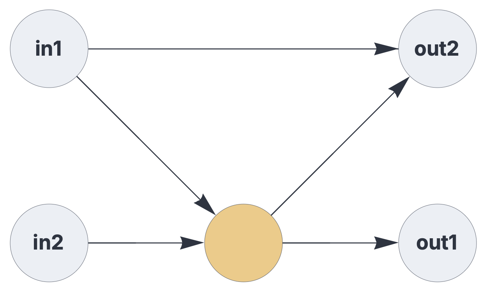
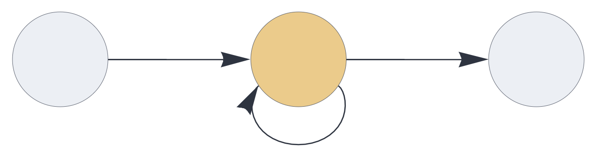
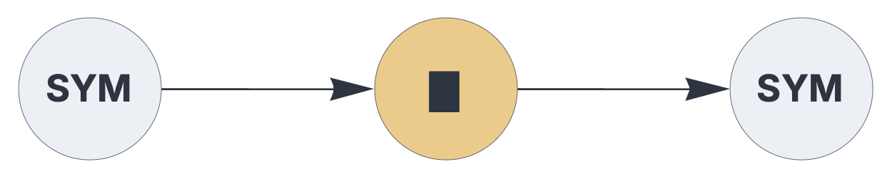
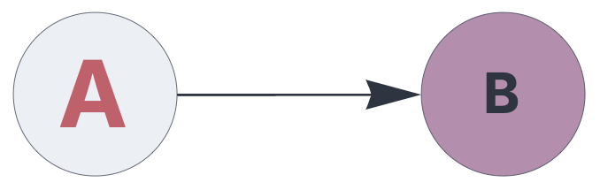

CIRCUIT CONFIGURATON
Components

Components are the fundamental building blocks of circuits, representing stateful operations on sparse sets or multisets.
See also: https://creatingintelligence.org/#circuits
Details and properties
- Data flow components, such as
delay, control the temporal integration of data over multiple timesteps. - Memory components, such as
autoortemporal, encapsulate a topological associative memory instance. - Circuit components generally maintain a state across multiple execution cycles, whereas pathways are strictly stateless.
- The functionality of components can be extended via a standardized plugin mechanism.
- This framework supports the seamless integration of user-defined, custom components and plugins.
- Certain components may receive and send multiple signal partitions (block coding).
- Components are visualized as circles (data flow components) or squares (memory components) in circuit schematics.
| Property | Description |
|---|---|
send |
output slots, as a list of integers |
receive |
list of input slots or tagged pathways |
plugin |
extension module |
label |
user-defined vertex label in circuit schematics |
shape |
vertex shape (“square”, “circle”, or “none”) |
fill |
background color (palette index 0 to 15) |
size |
font size, given in points |
color |
font color (palette index 0 to 15) |
Sending and receiving data
A pathway is defined via a slot number that occurs in one
component’s send parameters and in another (or the
same) component’s receive parameter. The choice of slot numbers
is arbitrary. The same slot can be received by multiple
components (multi-casting). However, the same slot number must
not occur in multiple send parameters.
{ "hyperparameters": {"default": [1000, 10]},
"dataflow": [
{"component": "input", "send": [1]},
{"component": "output", "receive": [1]}
]}
Lists of slot numbers denote disjoint blocks. Here the delay component receives and
sends two disjoint set partitions:
{ "hyperparameters": {"default": [1000, 10]},
"dataflow": [
{"component": "input", "send": [1]},
{"component": "input", "send": [2]},
{"component": "delay", "send": [11, 12], "receive": [1, 2]},
{"component": "output", "receive": [11]},
{"component": "output", "receive": [12]}
]}
receive parameters wrapped in a list denotes
signal merging:
{ "hyperparameters": {"default": [1000, 10]},
"dataflow": [
{"component": "input", "send": [1]},
{"component": "input", "send": [2]},
{"component": "delay", "send": [11], "receive": [[1, 2]]},
{"component": "output", "receive": [11]}
]}
A circuit that combines pathway merging and block coding:
{ "hyperparameters": {"default": [1000, 10]},
"dataflow": [
{"component": "input", "send": [1], "label": "in1"},
{"component": "input", "send": [2], "label": "in2"},
{"component": "delay", "send": [11, 12], "receive": [1, 2]},
{"component": "output", "receive": [11], "label": "out1"},
{"component": "output", "receive": [[12, 1]], "label": "out2"}
]}
A simple feedback system, routing the component’s output slot directly back into its input:
{ "hyperparameters": {"default": [1000, 10]},
"dataflow": [
{"component": "input", "send": [1]},
{"component": "delay", "send": [11], "receive": [[1,11]], "rate_limit": 1},
{"component": "output", "receive": [11]}
]}
Pathway tagging
{ "hyperparameters": {"default": [1000, 10]},
"dataflow": [
{"component": "input", "send": [1]},
{"component": "output",
"receive": [{"slot": 1, "tags": ["permute"]}]}
]}
Plugins
The functionality of circuit components may be extended via a standardized plugin mechanism. Plugins use the exact same programming interface as components. This framework includes a library of generic plugins and seamlessly integrates user-defined, custom plugin modules.
Note that plugins inherit the properties and options specified for the enclosing circuit component.
In the following example, the input component loads an
encoder plugin, the delay
component is extended via an update rule plugin, and the output component uses a
decoder plugin.
{ "hyperparameters": {"default": [1000, 10]},
"dataflow": [
{"component": "input", "plugin": "codec", "send": [1]},
{"component": "delay", "plugin": "latch", "send": [11],
"receive": [1], "capacity": 1},
{"component": "output", "plugin": "codec", "receive": [11]}
]}
As shown in the example above, plugins typically modify the visual appearance of components in circuit schematics.
Component visualization
In circuit schematics, you can customize individual
components’ label, color,
fill, and size properties:
{ "hyperparameters": {"default": [1000, 10]},
"dataflow": [
{"component": "input", "send": [1],
"label": "A", "color": 11, "size": 20},
{"component": "output", "receive": [1],
"label": "B", "fill": 15, "size": 12}
]}